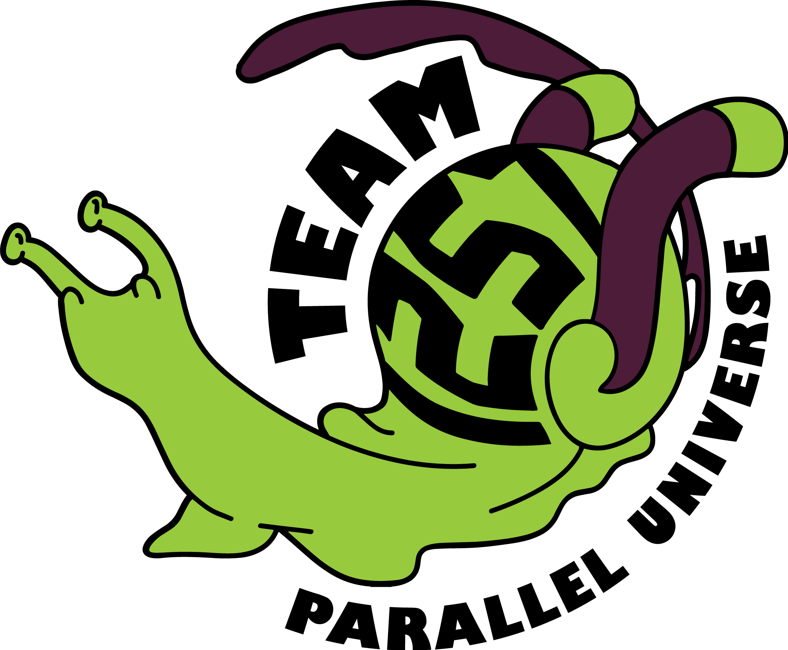

The Coding Club was the very first club I joined at UCVTS. During my freshman year, the seniors who had founded and run the club were incredibly welcoming, and I made some of my closest friends there, freshmen and upperclassmen alike. I’d had some prior experience in programming, which allowed me to help teach my friends, as well as work on developing my own skills. In my sophomore year, I became an officer, and the following year, co-president. As a member of Coding Club, I’ve created and taught workshops on various programming languages and created and graded weekly coding challenges for members to participate and earn points towards a prize in. As president, I’ve reorganized the club’s structure, introduced workshops and challenges as a large part of the club’s activities, and overall created a larger presence for the club on campus.
alsfasdf
